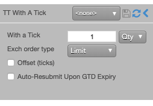

A With A Tick (WAT) order is a limit order that that is automatically repriced one tick towards the market based on the price and quantity of the opposite inside market as follows:
- When best available price is more than one tick away from the limit price, the WAT order is repriced.
- If the best available price is one tick away and the available quantity drops below a specified threshold, the WAT order is repriced.
The WAT threshold is a parameter set by the user in one of two ways:
- Qty: The threshold is an absolute value.
- %: The threshold is a percentage of the WAT order quantity.
For example, you could place a buy order and join the best bid with a WAT threshold of 100. When the best ask quantity drops below 100, the buy order price will be repriced one tick higher.

TT also allows you to add With A Tick behavior to all child orders of other TT Order Types, except for TT Trailing Limit.
TT With A Tick order parameters
- {% include Parameters/WithATick_wat-help.html %}
-
Exch order type: The order type for the child order. (Currently, only Limit orders are supported.)
- {% include Parameters/OffsetTicks.html %}
- {% include Parameters/AutoResubmit_Details.html %}